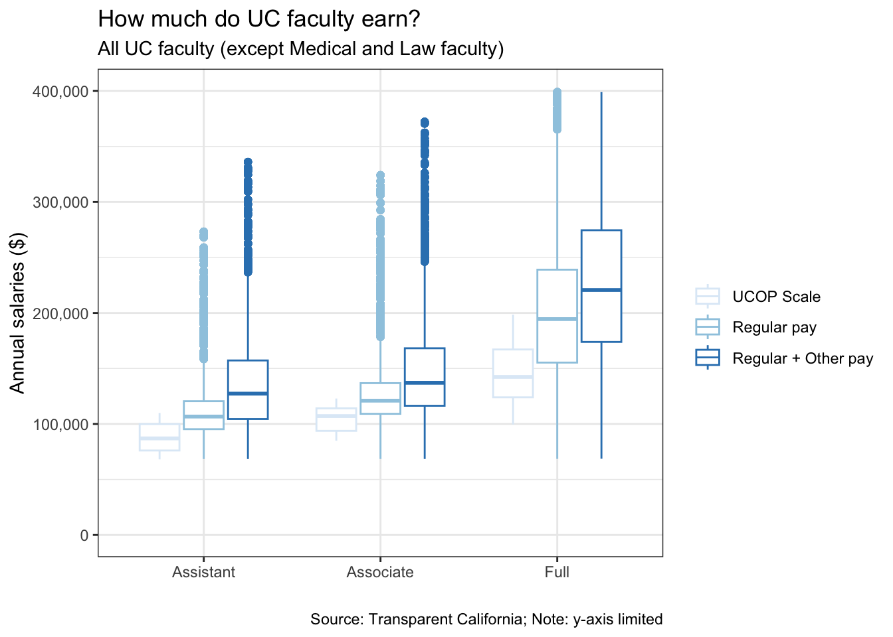
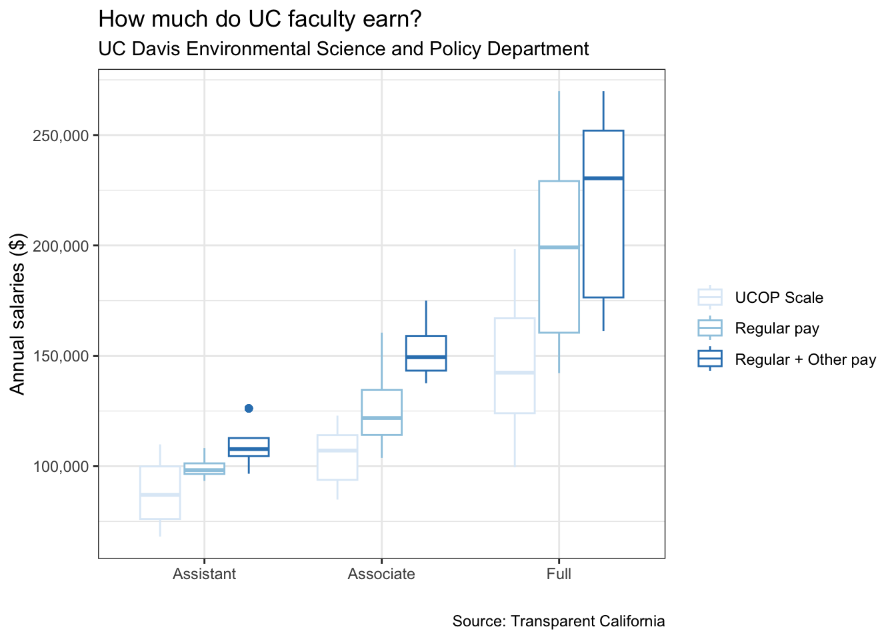

Grad Student Pay in Context
UC graduate students have been striking for three days now, and graduate students and faculty alike still have questions about the Union’s demands. Particularly, there are a number of running comments I hear that challenge the strikers demands. I’d like to create some posts responding to these throughout the strike weeks.
One of the comments I’ve heard is: Graduate students are asking to be paid more than some faculty. And well, are they? Having a base understanding of faculty pay is critical to understanding that question. The good news is that public salaries over a certain threshold are publicly released, and so we can easily contextualize graduate student pay demands alongside faculty pay.
An initial look at the University of California Faculty Pay Ladder might suggest that yes, asking for $54,000 for 50% FTE ($108,000 100% FTE) is more than what these faculty steps outline. But I think it is important to look a bit deeper, both at faculty pay and at the demands of the union. This blog will do just that to make two key points:
1. UCOP Faculty pay ladder alone is misleading
2. Graduate students have so much to gain from bargaining for even a fraction of the union’s current demands
How much do UC faculty make?
The University of California Faculty Pay Ladder for General faculty and a higher tier of faculty from Business, Economics, and Engineering have been used by faculty to signal to students: Look, faculty don’t make all that much more than graduate students, especially not compared to their $54,000 demand. But publicly available data about faculty salaries suggest otherwise.
I have scraped publicly available salaries through the Transparent California database for faculty in the University of California system. I’ve focused on Assistant, Associate, and Full faculty, both AY and FY, within typical university departments (i.e. I have removed Medical and Law school faculty) in 2021. The total number of faculty represented is 7867. (Note that there are some faculty excluded from these data given rate limits on the Transparent California page, but I have done my best to ensure that the variation is random. See the uc-faculty-pay script for details on the data scraping).
When comparing the UC pay ladder to both “regular pay”, as termed in the Transparent California database, as well as “other pay,” (off-scale), it is clear that the hiring process looks quite different in practice than on paper. Below I visualize the ranges of pay according to the UCOP scale, regular pay, and regular + other pay. Note that I have limited the y-axis so to more clearly see the difference in median values across the categories, but this hides the upper end salaries of Full professors, which at a maximum is $778,102.

We can also take a look at a table of the average salaries across these categories, below.
| Rank | UCOP scale | Regular pay | Total pay |
|---|---|---|---|
| Assistant | $ 88,110 | $ 112,762 | $ 138,316 |
| Associate | $ 104,444 | $ 128,664 | $ 152,256 |
| Full | $ 145,317 | $ 204,647 | $ 244,142 |
When we take a look at these numbers, it seems like the UCOP pay scale is only representing somewhere between 60-65% of what faculty are actually making across the UC.
Now, these are data all across the UC, spanning wide reaches of departments, expertise, etc., so we might say that these numbers are a bit exaggerated. To be sure this check wasn’t missing some faculty grouping that over-inflated the numbers, I spot checked the data by scraping only the faculty in my department: Environmental Science and Policy at UC Davis, in 2021. Among these 20 faculty, average salaries across ranks tend to be about $20,000 less than across the whole UC system, but this is likely because Davis offers different salaries than the rest of the state, and ESP is not among the highest ranking salary ladders (for instance, the Business, Economics, and Engineering departments are simply hired at higher rates, even on paper). So it seems like these UC numbers, both state-wide and hyper-locally, can give us a decent picture of UC faculty salary ranges.

| Rank | UCOP scale | Regular pay | Total pay |
|---|---|---|---|
| Assistant | $ 88,110 | $ 99,525 | $ 109,572 |
| Associate | $ 104,444 | $ 126,977 | $ 152,874 |
| Full | $ 145,317 | $ 201,382 | $ 220,094 |
Let’s think about these numbers. Even in a world where the union gets its demands of $54,000 for 50% FTE, this will still never realistically be higher than faculty. Even if a graduate student were working at their absolute maximum, 75% during the academic year and 100% during the summer at the demanded rate, they would make $87,750. For context, the lowest total salary in the Environmental Science and Policy Department is $96,619. But also importantly, there is absolutely no world in which the union gets their maximum ask. So let’s consider what graduate students realistically stand to gain during this bargaining process.
What kinds of salary might graduate students realistically gain from the strike?
I’ll admit, I myself have balked at the $54,000 demand by the union. I’ve already addressed this elsewhere, so I’ll point to a piece I wrote the other week regarding the reality of graduate student pay, and how the bargaining process might actually land us somewhere competitive. In summary, I know $54,000 is not realistic. But a realistic ask (between $36,837 and $42,573, depending on whether or not we adjust for different costs of living across campus) would make a huge difference for graduate students, and keep graduate student pay competitive with its peers. This pay raise, from $29,621 to $36,837, about a 30% raise, also puts UC graduate students in similar relative positions to faculty in their departments.
To understand graduate student pay relative to faculty pay, let’s look at the average pay across faculty ranks for Environmental Science and Policy Department at UC Davis (regular pay, not including additional ‘other’ pay), compared to pay from another large public university’s environmental science department: University of Michigan’s School for Environment and Sustainability. Pays are relatively similar for faculty between the two schools, with slightly higher rates at UCD. But when we overlay graduate student data here, we see that graduate students at Michigan make nearly $7,000 more annually than UCD graduate students at 50% FTE. What this means is that graduate students at UCD make relatively less money than peers in Michigan, not just in absolute terms but also relative to the faculty. For example relative to Associate Professors, graduate students in Michigan make 31% of their salary while those in California make 23% of their salary.
A realistic bargain, then, as outlined in my previous post, is 90% of living wage in the area. This would boost UCD graduate students’ salaries up on par with Michigan and still only less than a third of what faculty make, at 50% FTE (see table below). And even if students work at their maximum (75% FTE all academic year and 100% FTE all summer), they would earn $59,860 – still only 60% of the mean Assistant Professor salary, before ‘other pay’.
| Rank | University of Michigan | University of California (current) | University of California (realistic bargain) |
|---|---|---|---|
| Graduate Student | $ 36,082 | $ 29,621 | $ 36,837 |
| Assistant | 103453 (35%) | 99525 (30%) | 99525 (37%) |
| Associate | 118012 (31%) | 126977 (23%) | 126977 (29%) |
| Full | 187309 (19%) | 201382 (15%) | 201382 (18%) |